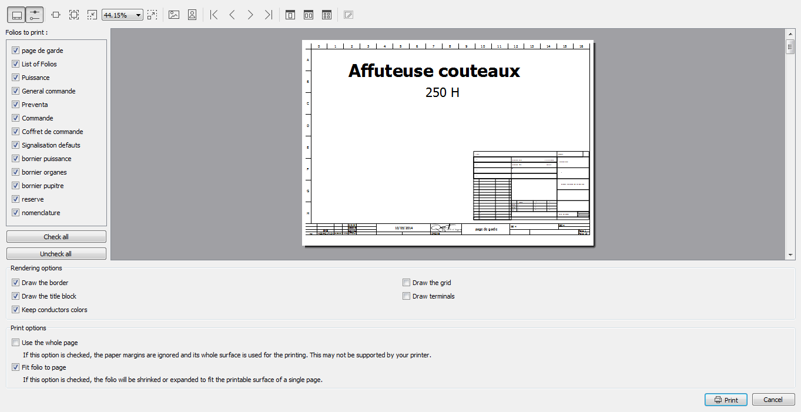

Print project¶
The active project can be printed from Menu bar, toolbar and using the corresponding keyboard shortcut.
Print project from Menu bar¶
- Select File > Print menu item to open the printing PopUP window.
- Click Print to a physical printer check button.

Figure: QElectroTech printing PopUP window
- Press Ok Button to open the selection printer PopUp window.
- Select printer and the preview printing window will be displayed.
Figure: QElectroTech printing preview PopUP window
- Select the folios which should be printed.
- Select the printing option.
- Press Print Button.
Note
- If the folio list is not displayed, select the icon
 from the toolbar.
from the toolbar. - If the printing options panel is not displayed, select the icon
 from the toolbar.
from the toolbar.
Print project from toolbar¶
- Select the icon
from the toolbar to open the printing PopUP window.
- Follow the steps defined at the Printing project from Menu bar section.
Note
If the toolbar is not displayed, it can be displaed from Settings > Display > Tools
Print project using keyboard shortcut¶
QElectroTech allows using keyboard shortcut to increase the working efficiency.
- Press
Ctrl + pto open the printing PopUP window.- Follow the steps defined at the Printing project from Menu bar section.
See also
For more information about QElectroTech keyboard shortcut, please refers to Menu bar section.
See also
QElectroTech allows predefining printing settings for reducing the working configuration effort each time that a project have to be printed. Please refers to Printing settings section for more information.